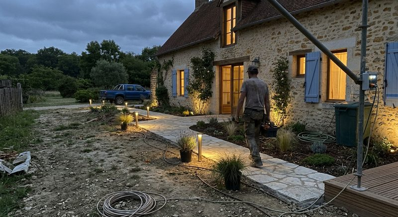

L’entreprise · Egly (91)
Un paysagiste installé à Egly
Eric Roche exerce dans les services d’aménagement paysager, depuis Egly, en Essonne.

Repères
Les informations de référence
- Activité : aménagement paysager
- Siège : Egly (Essonne, 91)
- Dirigeant : Eric Roche
Suite
Découvrir les prestations
Création, terrasses et entretien de jardins.